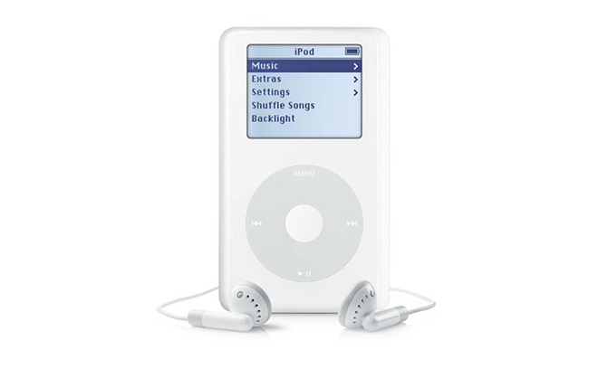

và những cống hiến của ông cho ngành Khoa Học Máy Tính
Ipod
 Hình 17: Máy nghe nhạc Ipod
Ipod là một dòng máy được phát triển bới Apple. Phiên bản đầu được phát hành vào ngày 23 tháng 10 năm 2001, sau 8 tháng kể từ phiên bản Itunes đầu tiên được phát hành. Mặc dù iPod đã được phát hành vào năm 2001, tuy nhiên vào thời điểm đó thì giá của nó quá đắt và khả năng chỉ tương thích với Mac khiến lượng tiêu thụ tương đối chậm cho đến năm 2004 thì iPod mới thực sự bùng nổ. Trước khi Ipod được Apple phát hành, thị trường thiết bị kĩ thuật số của thế giới đã rất phát triển với các thiết bị như máy ảnh, máy quay phim... Tuy nhiên thị trường về thiết bị nghe nhạc lại đang khá ảm đảm với các thiết bị thô to hoặc nhỏ gon nhưng lại vô dụng. Tầm nhìn của Steve Jobs khiến ông nhận thấy thị trường thiết bị nghe nhạc rất tìm năng đó; và Apple bắt đầu phát triển Ipod-một thiết bị nghe nhạc nhỏ gọn nhưng rất đa năng. Theo lệnh của Giám đốc điều hành Steve Jobs, giám đốc kỹ thuật phần cứng của Apple Jon Rubinstein đã tập hợp một đội ngũ kỹ sư để thiết kế các dòng Ipod, bao gồm kỹ sư phần cứng Tony Fadell và Michael Dhuey, và kỹ sư thiết kế Sir Jonathan Ive Rubinstein. Sau thời gian dài nghiên cứu thì Apple cũng gặt hái được thành công khi phát hành Ipod thế hệ đầu tiên. Lần đầu tiên trong lịch sử khi mà con người có thể bỏ một thiết bị vào túi với hơn 1000 bài hát được lưu trữ trong đó ( Ipod đời đầu có bộ nhớ là 5gb). Đây thật sự là một cuộc cách mạng mà Apple nói chung và Steve Jobs nói riêng đã tạo ra cho nền âm nhạc thế giới. Giống như các máy nghe nhạc kỹ thuật số khác, iPod có thể thể được sử dụng như một thiết bị lưu trữ dữ liệu .Dung lượng lưu trữ của Ipod khác nhau tuỳ theo phiên bản và thế hệ sản xuất, giao động từ 2 GB( cho Ipod Shuffle) hay cũng có thể lên đến 128 GB ( cho phiên bản Ipod Touch ). Các thế hệ iPod mới nhất đã được phát hành vào ngày 15 Tháng 7 năm 2015. Có ba phiên bản hiện tại của iPod: các phiên bản siêu nhỏ gọn iPod Shuffle , iPod Nano và màn hình cảm ứng iPod Touch . Thế hệ thứ sáu iPod Touch bao gồm một loạt các cải tiến đặc tả như bộ vi xử lý A8 nâng cấp và màn hình chất lượng cao hơn. Khả năng sử lí của các thiết bị mới này nhanh hơn so với thế hệ trước 5 lần. iPod một sản phẩm nghe nhạc giải trí vô cùng hoàn hảo đã tạo được một tiếng vang lớn trong ngành công nghệ trước khi các sản phẩm điện thoại thông minh ra đời, điển hình là Iphone đã đẩy lùi iPod dẫn đến viêc doanh số iPod giảm dần và iPod không còn được sử dụng nhiều nữa.